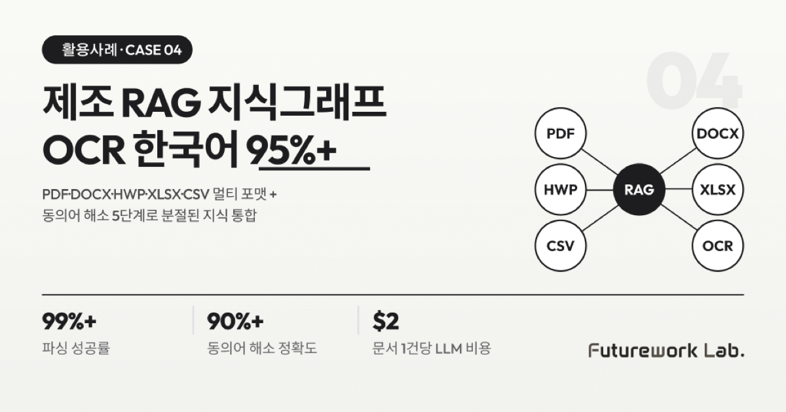

본 사례는 산업단지 제조 기업 스파이어스테크놀로지와 함께 진행한 제조 특화 RAG(검색 증강 생성) 지식 그래프 프로젝트를 기반으로 정리했습니다. 다양한 포맷의 비정형 문서를 그래프로 변환하고, 동일 장비를 다섯 가지 다른 이름으로 부르는 현장 지식 분절 문제를 해소한 과정을 공유합니다.
왜 비정형 문서가 활용되지 못하는가
이 회사는 PDF, DOCX, HWP, XLSX, CSV 등 다양한 포맷의 문서를 보유하고 있었지만, 실제 업무에 활용하지 못하고 있었습니다. 다음 3가지 문제가 동시에 발생했습니다.
- 문서 자동 처리 불가: 스캔 문서에 OCR(광학 문자 인식) 처리가 안 되어 있어 검색이 불가능했습니다. 표·이미지 등 구조화된 정보 활용도 어려웠습니다.
- 동의어 해소 불가: 같은 장비를 "프린터_01", "PT-01", "1번 인쇄기", "Printer Unit 1" 등으로 다양하게 표기합니다. 제조 현장 지식이 분절되어 맥락 기반 검색이 불가능했습니다.
- 의사결정 지원 부족: 장비 스펙, 공정 파라미터, 불량 원인 등이 문서에 산재되어 있어, 문제 해결에 오래 걸리고 반복되는 불량의 근본 원인 파악이 어려웠습니다.
해결 핵심 — 3단계 파이프라인으로 비정형 문서를 그래프로 변환
1단계 — 수집·전처리
| 기능 | 상세 |
|---|---|
| 멀티 포맷 파싱 | PDF, DOCX, HWP, XLSX, CSV 자동 감지 + 텍스트·표·이미지 캡션 추출 |
| 의미론적 청킹 | 고정 길이 분할 대신 문맥 기반 분할 (300~800 토큰) |
| 메타데이터 추출 | 파일 속성 자동 추출 + LLM 기반 자동 분류 (문서 유형, 키워드, 요약) |
| OCR | 한국어 95% 이상 인식률, 스캔 문서 자동 처리 |
2단계 — 지식 그래프 구축
| 기능 | 상세 |
|---|---|
| 온톨로지 정의 | 제조 도메인 특화 엔티티 6종 (장비, 공정, 부품, 불량, 규정, 작업자) + 13개 관계 유형 |
| 엔티티/관계 추출 | 온톨로지 스키마 기반 LLM 추출 + Gleaning(2차 검증) + 신뢰도 점수 |
| 동의어 해소 | 5단계 매칭 전략 (정확매칭 → 동의어사전 → 규칙 → 임베딩유사도 → LLM판단) |
| 커뮤니티 감지 | Neo4j GDS Leiden 알고리즘 — 계층적 커뮤니티 구축 (3 레벨) |
3단계 — 하이브리드 검색
벡터 검색과 그래프 기반 검색을 결합하고, 모든 답변에 원본 추적을 지원합니다. 답을 보여줄 뿐만 아니라 어떤 문서의 어떤 청크에서 나왔는지를 함께 제시합니다.
기술 스택: Neo4j(그래프 데이터베이스) / GPT-4o·Claude Sonnet(LLM) / text-embedding-3-large(임베딩) / Python(파이프라인)
4가지 허들과 해결 과정
| 허들 | 문제점 | 해결 |
|---|---|---|
| ① HWP 파싱 라이브러리 성숙도 부족 | 표·글상자 등 복잡 구조 파싱이 실패하는 경우 | 한컴 공식 API 또는 hwp5 오픈소스 라이브러리 사전 검증, 필요 시 HWP → PDF 변환 후 파싱 병행 |
| ② 스캔 품질 저하로 OCR 인식률 저하 | OCR 인식률이 낮으면 이후 전체 처리 오류로 전파 | 이미지 전처리(디스큐·노이즈 제거) 파이프라인 추가, 신뢰도 임계값 미만 시 수동 검수 큐 전달 |
| ③ 대용량 문서 처리 지연 | 사용자 대기 시간 증가 | 비동기 처리 + 진행률 표시, 완료 시 알림 발송 |
| ④ LLM 기반 메타데이터 추출 비용 증가 | 대량 문서 처리 시 토큰 비용 급증 위험 | 규칙 기반 추출 우선, LLM은 보완용으로 활용, 토큰 모니터링 상시 운영 |
결과 — 정량 개선 수치
| 지표 | 개선 |
|---|---|
| 파싱 성공률 | 정상 파일 기준 99% 이상 |
| 단일 문서 파싱 시간 (50페이지) | OCR 미포함 30초 이내 / OCR 포함 120초 이내 |
| 엔티티 추출 Precision | 85% 이상 |
| 엔티티 추출 Recall | 75% 이상 |
| 동의어 해소 정확도 | 90% 이상 |
| OCR 한국어 인식률 | 95% 이상 |
| 문서 유형 분류 정확도 (LLM) | 85% 이상 |
| 100페이지 문서 그래프 구축 | 30분 이내 |
| 파이프라인 가용성 | 99.5% 이상 (월 다운타임 3.6시간 이내) |
| 문서 1건당 LLM 토큰 비용 | $2 이내 |
| 요약 품질 (전문가 평가) | 4.0/5.0 이상 |
정성적 개선
- 문서 업로드 → 파싱 → 청킹 → OCR → 그래프 구축 전 과정 자동화
- 동의어 자동 병합으로 지식 분절 해소
- 모든 노드/엣지에 출처 청크 ID 기록 → 원본 문서까지 한 번에 추적
- 커뮤니티 자동 감지로 주제별 그룹화 → 맥락 기반 검색 가능
AX Flow와의 연결 — Structure 레이어 (Triple-GraphRAG)
본 사례는 AX Flow의 4-Layer 운영 구조 중 Structure 레이어가 정면으로 작동한 사례입니다. Structure 레이어는 온톨로지·Graph-RAG·Vector DB로 구성되며, 본 사례의 제조 도메인 특화 엔티티 6종과 13개 관계 유형, 5단계 동의어 해소, Neo4j GDS Leiden 알고리즘 기반 커뮤니티 감지가 모두 이 레이어에서 이루어집니다. Connect 레이어는 PDF·DOCX·HWP·XLSX·CSV 등 5포맷을 단일 입력으로 통합하고, Execute 레이어의 3단계 파이프라인이 수집부터 그래프 구축까지 순차 실행합니다. 새 포맷이나 도메인이 추가되어도 같은 Structure 레이어 위에서 확장 가능한 구조입니다.
해당 사례 시사점 3가지 — 제조 RAG
첫째, 제조 RAG는 일반 RAG가 아닙니다. 제조 도메인 특화 엔티티(장비·공정·부품·불량·규정·작업자) 6종과 13개 관계 유형을 미리 정의해야 의미 있는 검색이 가능합니다.
둘째, 동의어 해소가 정확도를 좌우합니다. 정확매칭만으로는 90% 정확도 달성이 불가능합니다. 동의어사전·규칙·임베딩 유사도·LLM 판단을 5단계로 결합해야 현장 표기 분절을 흡수할 수 있습니다.
셋째, 비용은 규칙 기반 우선, LLM 보완용입니다. 모든 메타데이터 추출에 LLM을 쓰면 토큰 비용이 폭증합니다. 규칙으로 70%를 잡고 LLM으로 30%를 보완하는 구조가 운영 가능한 비용 곡선을 만듭니다.
지식이 그래프에 축적되면 검색 한 번이 아니라 자산이 남습니다. 새 직원 온보딩, 사고 원인 추적, 규정 변경 영향 분석이 모두 같은 그래프 위에서 이루어집니다.
함께 읽으면 좋은 글
- AI 기반 생산 스케줄 자동 추천 — 우선순위 배정 60배 단축
- AI 문서 검토·교정·비교 — PM 월간 검토 시간 85% 감소
- 제조 공정 조건 최적화 — 김 제조 불량률 84% 감소, 연 9,800만 원 절감
- 제조AI특화 스마트공장 완벽 가이드 — 800억 원, 400개 기업 선정 전략
본 사례는 AX Flow Usecase 자료 p.7~8 (Case 4) 기반으로 작성되었습니다.
#제조RAG #지식그래프 #Neo4j제조 #온톨로지6엔티티 #OCR한국어 #동의어해소 #HWP파싱 #멀티포맷문서 #하이브리드검색 #Leiden커뮤니티